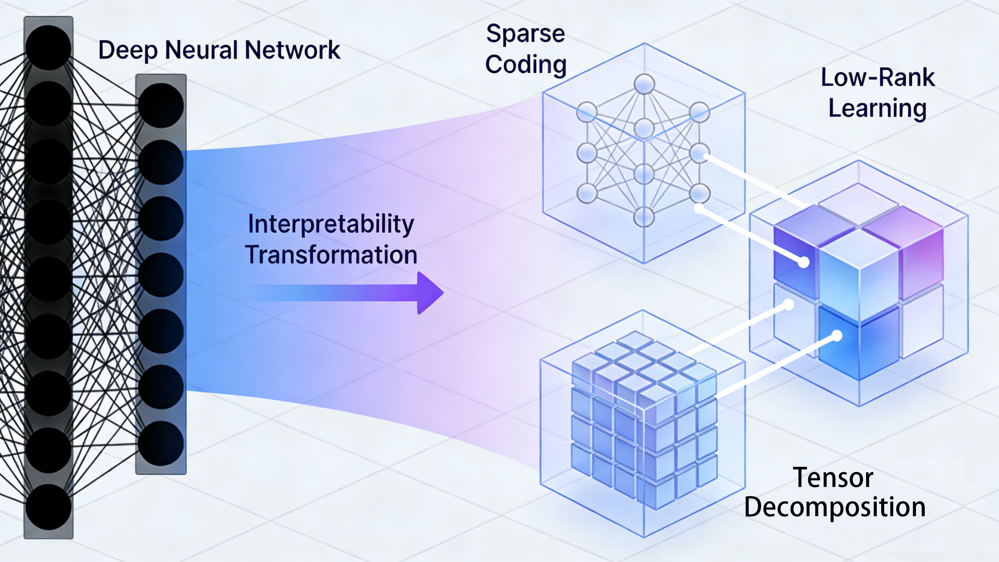

Intelligent Perception and Autonomous Optimization Laboratory
These research efforts focus on the directions of intelligent perception and autonomous optimization in visual information processing and analysis, aiming to systematically break through the core theoretical bottlenecks and key technical challenges encountered, and drive the systematic, innovative development of intelligent science.The relevant achievements will gradually form a series of solutions with both demonstrative significance and promotion value in several key fields, including unmanned system perception, industrial visual quality inspection, intelligent medical imaging, bioinformatic computing, dynamic inference networks, and autonomous evolution prediction systems.
New Integrated Intelligence Paradigm of Perception-Inference-Decision-Making

This research project aims to explore a new integrated intelligence paradigm—Perception, Inference, and Decision-Making—for open environments. Targeting multi-modal, few-shot data like images and videos in complex open scenarios, the study develops an intelligent framework that synergistically integrates data-driven and knowledge-guided approaches. It investigates the mutual promotion between autonomous perception and logical reasoning in dynamic settings, overcoming limitations of traditional visual systems reliant on closed-world assumptions. Ultimately, the project seeks to elevate intelligent systems from constrained perception to open-world cognition, providing theoretical and technical support for next-generation artificial intelligence.
New Theories and Methods for Interpretable Visual Computing Scheme

This research project develops new theories and methods for interpretable visual computing. Confronting real-world complex scenarios, it aims to overcome limitations of traditional "black-box" prediction. By integrating classical mathematical models such as sparse coding, low-rank learning, and tensor decomposition with advanced deep neural networks, it constructs visual computing methods featuring strong generalization, structural interpretability, and continuous evolution. The core objective is to shift visual intelligence from unpredictable "black boxes" to transparent "white boxes", thereby laying a solid foundation for reliable human-machine collaboration and trustworthy artificial intelligence applications.
New Mechanisms and Frameworks for Autonomous Optimization of Visual Intelligence

This research project explores new mechanisms and frameworks for autonomous optimization of visual intelligence. Addressing core challenges of low efficiency and lack of generalization theories in ultra-large-scale non-convex optimization, it aims to construct a lightweight adaptive optimization theoretical system with rigorous convergence guarantees, and develop a core optimization engine enabling efficient autonomous evolution from model training to edge deployment. Its core objective is to lay a solid theoretical foundation and provide critical methodological support for efficient training and reliable deployment of visual intelligence systems, overcoming optimization bottlenecks and driving synchronous improvement of performance and efficiency.